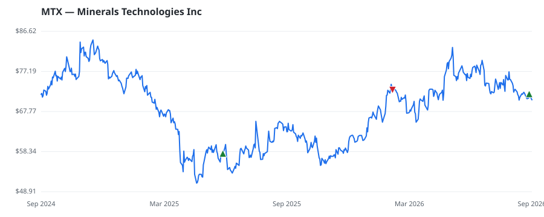

bullish · bearish · n/a — dots: price>SMA10 · SMA10>SMA50 · SMA50>SMA200 · up>down volume (20d)
Materials · mid cap
Members who bought MTX earned a dollar-weighted +13.2% from their disclosure dates, versus +6.9% for the S&P 500 over the same holding windows (+6.3% alpha).

▲ green = a disclosed purchase · ▼ red = a disclosed sale (plotted on disclosure date)
Minerals Technologies Inc mines, produces, and sells mineral-based products. The firm organizes itself into two segments: The Consumer & Specialties segment that derives maximum revenue, serves consumer end markets directly with mineral-to-market finished products and also provides specialty mineral-based solutions and technologies that are an essential component of its customers' finished products; and The Engineered Solutions segment serves industrial end markets with engineered systems, mineral blends, and technologies that are designed to improve its customers' manufacturing processes and INDUSTRIAL INORGANIC CHEMICALS · website
| Revenue | $2.1B | Net income | $-14.0M |
|---|---|---|---|
| Operating income | $47.4M | Diluted EPS | $-0.59 |
| Assets | $3.5B | Equity | $1.7B |
| Member | Chamber | Out-performer | Disclosed buys $ | Return on buys |
|---|---|---|---|---|
| Gilbert Cisneros | house | — | $16K | +13.2% |
Disclosed $ figures are bracket midpoints — filings report ranges (e.g. $1,001–$15,000), not exact amounts.
| Fund | Fund alpha vs SPY | Position | % of book |
|---|---|---|---|
| Aufman Associates Inc | +30% | $3M | 1.1% |
Hedge data: SEC EDGAR 13F · ranked funds beat SPY in >50% of their quarters · fund alpha = mirror-portfolio return minus SPY.